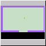
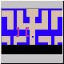
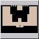
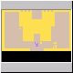
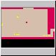
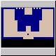
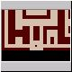
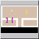

The classic first
view of Adventure.
|

And the familiar
Yellow Castle.
|

I hope you know the
shortcut on Game 1.
|

The Black Castle!
|

The White Castle!
|

And the catacombs.
|
|

Finally, bringing the
chalice home...
|

For non-classic levels
there's a new
selection mechanism
|

And a new dragon
who moves fast!
|

And a new castle
|

Non symetrical mazes
|

More of that Maze
|

You'll also need to
make heavy use of
the bridge
|

Use the candle to
light your way
(if you you
selected extra items)
|

The armour protects
your from those pesky
dragons
|